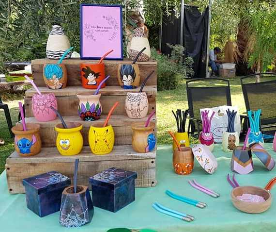

Es muy importante NO LAVAR el mate antes de curarlo, esto evitará que la madera se rompa o se agriete.
Debes limpiarlo con alguna tela seca y untar por dentro con algún aceite o manteca, llenarlo con yerba húmeda usada, e ir agregando constantemente gotitas de agua tibia, sin permitir que se seque en ningún momento.
Este proceso se lleva a cabo durante 24hs o 48hs.
¿Quienes somos?

Somos el fin de los mates aburridos. Ahora cada hogar puede tener en su mesa un mate personalizado, único, e inigualable.La consigna es fácil. Elegí el motivo que te guste, lo pedís, y con mucho amor y arte lo pintamos.Mates originales de buena calidad y únicos.Somos el regalo perfecto.
Presentación

Al comprar cualquiera de nuestros productos te garantizamos una excelente presentación!
Las bolsitas son encantadoras, y hechas desde cero con papeles de diferentes temàticas acorde al modelo de mate.
A la hora de hacer un regalo, no hay manera de quedar mejor, que regalar un producto de MIMATE!
Madera y calidad
Algarrobo

El algarrobo es la madera ideal para un buen mate duradero, resistente al calor y a los golpes. En MIMATE entendemos que es m uy importante la calidad de la madera para garantizar una larga vida a nuestros mates.
Consejo para curar tu mate

Contacto
Anita
Villaseca, Maipú, Mendoza, Argentina.
Celular Movistar: 2634-732012
Enviame un correo a anita.raffo97@gmail.com